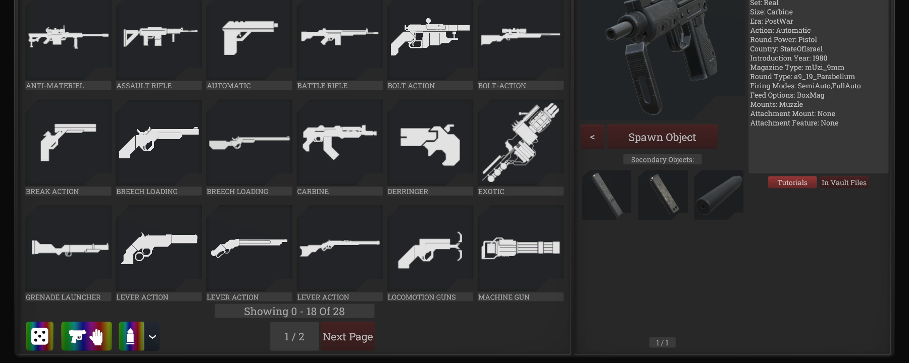

Gundomizer
H3VR · Item Spawner V2 · 1.0.0
Randomize items directly in Item Spawner V2, including the toolbox tablet, in classic and tag-search modes.

Features
- Random item: use your current category and subcategories, or selected tags, across all pages.
- Compatible gear: find magazines and attachments that fit what you're holding, including installed rail adapters.
- Random ammo: roll a compatible variant; use the arrow beside the ammo button to choose which variants to include.
- Spawn or preview: spawn immediately or inspect and reroll before using Spawn.
- Auto-fill: replace loaded rounds and fill the held magazine or weapon, while still spawning the loose round.
- Continuous search: see loading progress and click the active button again to cancel.
Compatibility & performance
Supports modded items, including Modul / Modular Workshop and OtherLoader's custom item IDs. A saved background metadata index checks connectors without loading entire assets just to inspect them, and updates changed packages between launches.
Mod options
- Spawn Item Instantly — ON: spawn immediately; OFF: preview first.
- Auto Fill Held Item — ON: refill with the rolled ammo after spawning.
- Persistent Connector Index — ON: build and reuse the metadata cache.
- Reset Metadata Indexing — OFF: clear and rebuild the cache once, then switch itself off.
Edit quaternion.gundomizer.cfg through your mod manager's Config Editor. Requires BepInExPack H3VR.
Changelog
1.0.0: First public release with item, compatible gear and ammo rolls, optional auto-fill, and persistent background indexing.
Credits
Special thanks to Glicen for requesting and sponsoring the mod.
Thanks to Anton Hand and RUST LTD. for H3VR; the H3VR Homebrew community, mod authors, and tool and loader maintainers; and nesrak1 for AssetsTools.NET.
Support
Tips and donations are welcome on Ko-fi. Find my other projects and links on quaternion7.github.io.